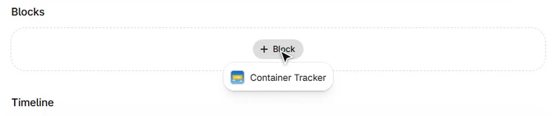
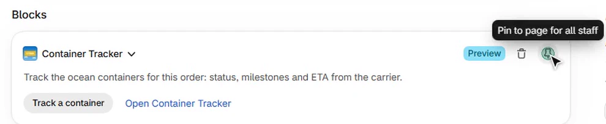
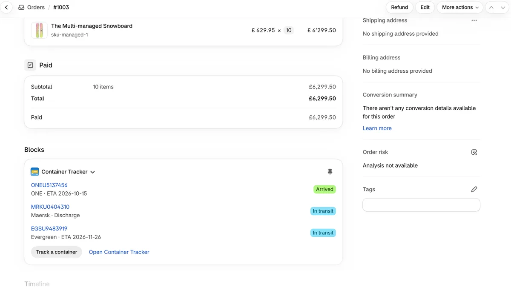
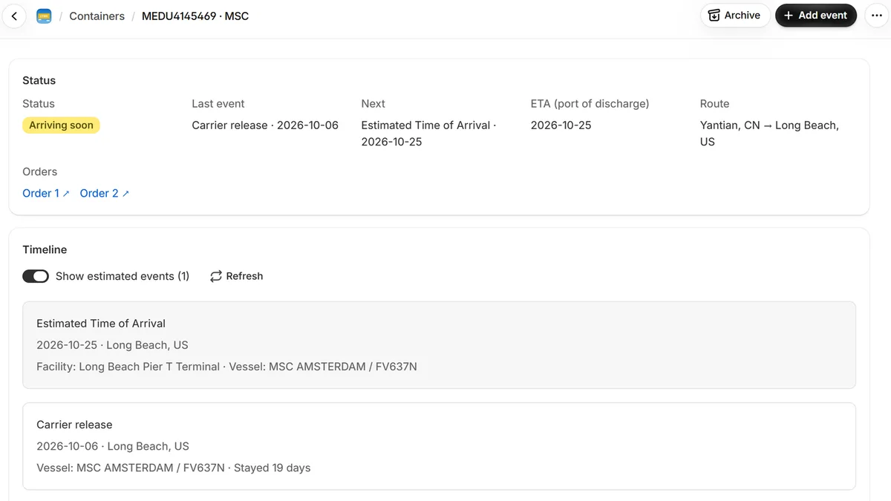
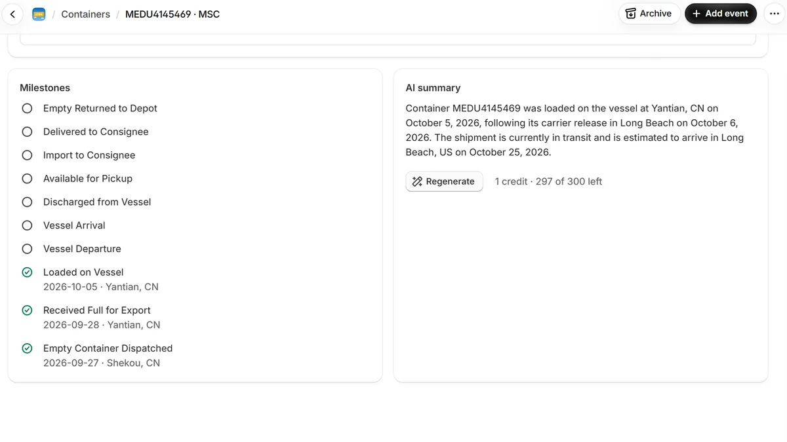
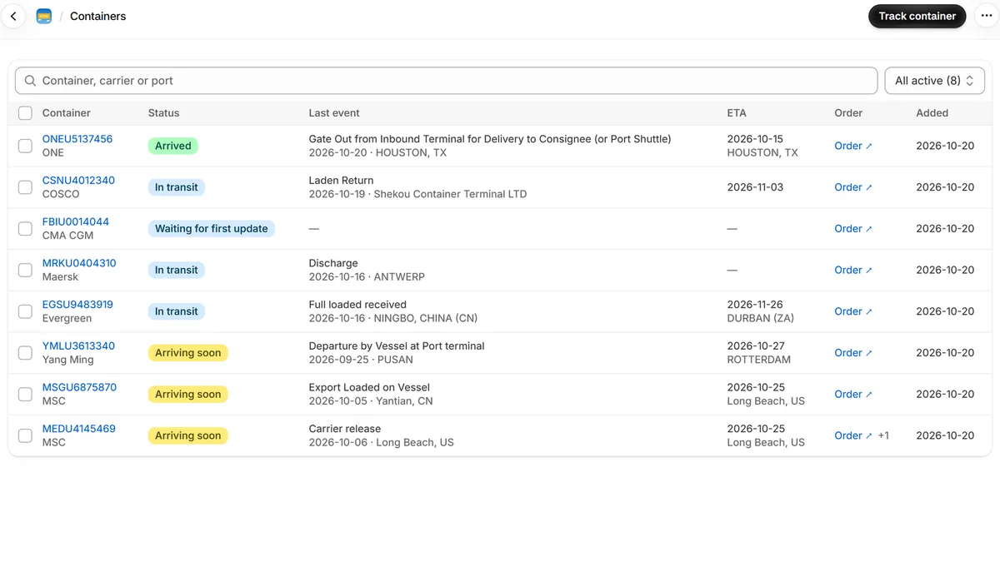
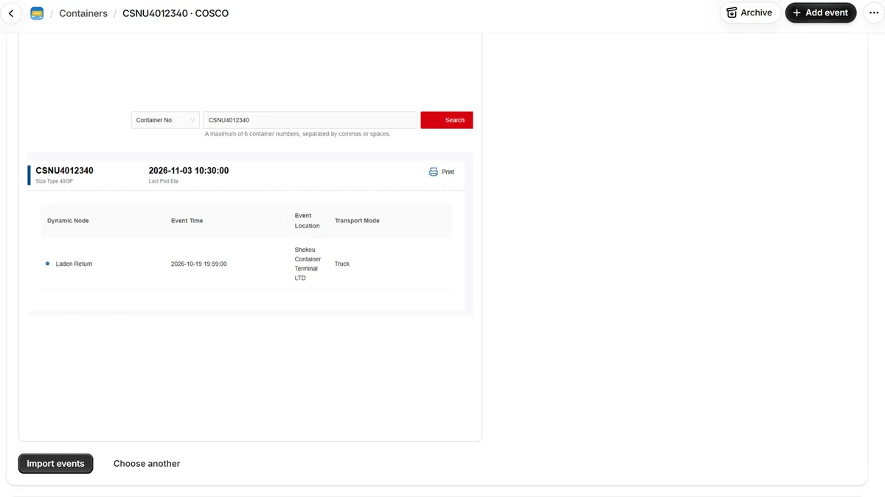
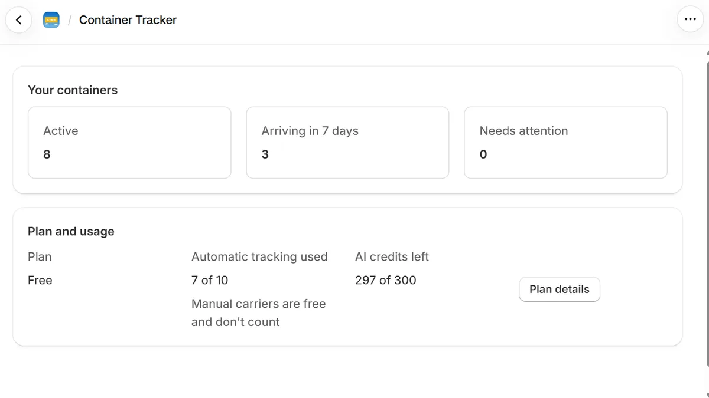

Getting Started with Container Tracker for Shopify
Container Tracker follows your inbound ocean containers right in the Shopify admin. Enter a container number on an order or draft order, and the app checks the carrier for events, milestones and the arrival date (ETA). All containers are listed in one place, so you can see what arrives this week and what needs attention.
This guide walks you through setup and every part of the app. Answers to common questions are in the FAQ.
1. Install the app
- Open the Container Tracker listing on the Shopify App Store and click Install.
- Review the access screen and confirm. Container Tracker does not ask for access to your customers, products or order contents.
- The app opens on its Home page with a short setup guide. You start on the Free plan; no settings or carrier accounts are needed.
You find the app later under Apps → Container Tracker in the admin's left menu. Its pages are Home, Containers, Plan, Settings and Help.
2. Add the block to the order page
The Container Tracker block shows the containers of an order on the order page itself. You add it once, and it then appears on every order.
- Go to Orders and open any order.
- Scroll to the Blocks section, click + Block and choose Container Tracker.

- The block appears with a Preview label. Click the pin icon (Pin to page for all staff) so the block stays on every order for everyone on your team.

Draft orders have their own block. Open any draft order and add and pin Container Tracker the same way.
No block? You can also use More actions → Track container at the top of any order or draft order. It opens the same form in a window.
3. Track a container
From an order or draft order
- In the Container Tracker block, click Track a container.
- Enter the container number, for example
MSKU1234565(4 letters and 7 digits; spaces and dashes are removed). If the last digit doesn't match the standard check digit, the form warns you about a possible typo. - The carrier is detected from the prefix and selected for you. Change it if the container sails with another line, which happens with leased containers.
- Click Track container.
The container is now linked to this order and shows in the block with its carrier, ETA and status. The first update from the carrier usually takes a few minutes.

One container can belong to several orders. If you enter a number that is already tracked, it is linked to the new order as well, and no extra container is used from your plan.
From the app
On the Containers page, click Track container, enter the number and carrier, and confirm. Containers tracked here are not linked to an order; to link one later, enter the same number in the block of that order.
4. The container page
Click a container number in the order block or on the Containers page to open its page in the app. It has these parts:
- Status: the status badge, last and next event, ETA at the port of discharge, the route (port of loading to port of discharge) and a link back to the order.
- Timeline: every event from the carrier with date, location and vessel. Estimated events, such as the expected arrival, are marked as estimated; switch Show estimated to hide or show them. Refresh reloads the latest data.
- Milestones: a checklist of the main stages of the journey, such as loaded on vessel, vessel departure, vessel arrival, discharged, available for pickup and empty returned, ticked as the carrier reports them.
- AI summary: a short, plain-language status of the shipment that you can paste into an email to your customer. Each summary uses 1 AI credit.
- Archive: moves the container to the Archived list when you no longer need it, for example after delivery. Its history stays, and you can unarchive it at any time.


5. The Containers page
The Containers page lists every container of your store with its carrier, status, last event, ETA and linked order.
- Filters: All active, Arriving in 7 days (sorted by ETA, soonest first), Needs attention and Archived. Each filter shows how many containers it holds.
- Search by container number, carrier or port.
- Archive: select one or more containers and click Archive. In the Archived filter, the same button unarchives them.
- Click a container to open its page, or the order link to go to the order.

What the statuses mean
| Status | Meaning |
|---|---|
| Waiting for first update | Just added; the carrier hasn't returned events yet. |
| In transit | On its way; the ETA is more than 7 days away or not known yet. |
| Arriving soon | The ETA is within the next 7 days. |
| Arrived | The ETA has passed and the carrier reported events after it. |
| Past ETA | The ETA has passed with no newer event from the carrier. Shown under Needs attention. |
| No carrier data | Two days after adding, the carrier still has no events for this number. Check the number and the carrier. Shown under Needs attention. |
| No events yet | A carrier without automatic tracking, and no events added yet. |
| Completed | The journey is finished and the carrier is no longer checked. |
| Status unavailable | The events couldn't be loaded just now. Try Refresh later. |
6. Carriers without automatic tracking
Containers from MSC, Maersk, Hapag-Lloyd, CMA CGM, ONE, Yang Ming and Evergreen are tracked automatically. For other carriers, such as COSCO, HMM and ZIM, you track the container yourself. In the carrier list these are grouped under Manual tracking. They are free and don't count toward your plan's container limit. The Help page in the app always shows the current list.
Add events by hand
- Open the container page and click Add event.
- Pick the event (for example Received at Terminal), then enter the location, date and, optionally, the time and container type.
- Optionally fill in the shipment details (vessel, voyage, ports) and remarks, then click Save.
The event appears in the timeline and the milestones update. You can edit or delete events you added.
Import events from a screenshot
- Open the container on the carrier's tracking website.
- Take a screenshot that shows the container number and the list of events.
- On the container page in the app, under Import events from a screenshot, paste it (Ctrl+V or Cmd+V) or drop the image file (PNG, JPG or WebP).
- Check the preview and click Import events. Reading the screenshot takes 10 to 30 seconds.
AI reads the events, dates, locations and vessels from the image and adds them to the timeline. Each import uses 1 AI credit. The import is also offered for automatically tracked containers that have no carrier data yet.

7. Home, plan and usage
The Home page shows:
- The setup guide for new stores: track your first container, and add the block to the order page. It hides once both steps are done, or when you close it.
- Your containers: counts of active containers, containers arriving in the next 7 days and containers that need attention. Click a count to open the filtered list.
- Plan and usage: your plan, the automatically tracked containers you have used, and the AI credits you have left.

Plans
| Plan | Price | Includes |
|---|---|---|
| Free | $0 | 10 automatically tracked containers (one-time allowance), 300 AI credits |
| Pro | $15 per month, or $150 per year | 20 new automatically tracked containers per month, 400 AI credits per month |
Containers from carriers with manual tracking are free on every plan. A container counts once, however many orders it is linked to. Plans are billed by Shopify on your Shopify invoice. To change your plan, open Plan in the app and click See plans. Your containers and their history stay when you change plans. The Plan page shows your current limits and when your usage resets.
8. Settings and help
- Settings: the contact email we use for messages about your account and tracking problems. It starts as your store email; change it and click Save.
- Containers and the plan belong to the store, so all staff see the same list.
- Help: the carriers with automatic and manual tracking, short answers to common questions, and our support address.
Need help?
Read the FAQ, or email us at support@get-ctms.com. Please include the container number and carrier if your question is about a specific container.